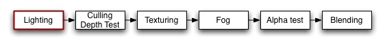

Previous
Previous
The material and lighting parameters are used to control the built-in vertex lighting.
Pixel lights are usually implemented with custom vertex/fragment programs and don't use vertex lighting. For these you don't use any of the commands described here, instead you define your own vertex and fragment programs where you do all lighting, textuting and anything else yourself.

Vertex Coloring & Lighting is the first effect to gets calculated for any rendered geometry. It operates on the vertex level, and calculates the base color that is used before textures are applied.
Syntax
The toplevel commands control whether to use OpenGL lighting or not, and some configuration options. The main setup is in the Material Block, detailed further below.
- Color Color
- Sets the object to a solid color. A color is either four RGBA values in parenthesis, or a color property name in square brackets.
- Material { Material Block }
- The Material block is used to define the material properties of the object.
- Lighting On | Off
- For the settings defined in the Material block to have any effect, you must enable Lighting with the Lighting On command. If lighting is off instead, the color is taken straight from the Color command.
- SeperateSpecular On | Off
- This command makes specular lighting be added to the end of the shader pass, so specular lighting is unaffected by texturing. Only has effect when Lighting On is used.
Material Block
This contains settings for how the material reacts to the light. Any of these properties can be left out, in which case they default to black (i.e. have no effect).
- Diffuse Color
- The diffuse color component. This is an object's base color.
- Ambient Color
- The ambient color component. This is the color the object has when it's hit by the ambient light set in the RenderSettings.
- Specular Color
- The color of the object's specular highlight.
- Shininess Number
- The sharpness of the highlight, between 0 and 1. At 0 you get a huge highlight that looks a lot like diffuse lighting, at 1 you get a tiny speck.
- Emission Color
- The color of the object when it is not hit by any light.
The full color of lights hitting the object is:
Ambient * RenderSettings ambient setting + |
The light parts of the equation (within parenthesis) is repeated for all lights that hit the object.
Typically you want to keep the Diffuse and Ambient colors the same (all builtin Unity shaders do this).
Examples
Always render object in pure red:
Shader "Solid Red" {
SubShader {
Pass {
Color (1,0,0)
}
}
}
Basic Shader that colors the object white and applies vertex lighting:
Shader "VertexLit White" {
SubShader {
Pass {
Material {
Diffuse (1,1,1,1)
Ambient (1,1,1,1)
}
Lighting On
}
}
}
An extended version that adds material color as a property visible in Material Inspector:
Shader "VertexLit Simple" {
Properties {
_Color ("Main Color", COLOR) = (1,1,1,1)
}
SubShader {
Pass {
Material {
Diffuse [_Color]
Ambient [_Color]
}
Lighting On
}
}
}
And finally, a full fledges vertex-lit shader (see also SetTexture reference page):
Shader "VertexLit" {
Properties {
_Color ("Main Color", Color) = (1,1,1,0)
_SpecColor ("Spec Color", Color) = (1,1,1,1)
_Emission ("Emmisive Color", Color) = (0,0,0,0)
_Shininess ("Shininess", Range (0.01, 1)) = 0.7
_MainTex ("Base (RGB)", 2D) = "white" {}
}
SubShader {
Pass {
Material {
Diffuse [_Color]
Ambient [_Color]
Shininess [_Shininess]
Specular [_SpecColor]
Emission [_Emission]
}
Lighting On
SeperateSpecular On
SetTexture [_MainTex] {
Combine texture * primary DOUBLE, texture * primary
}
}
}
}